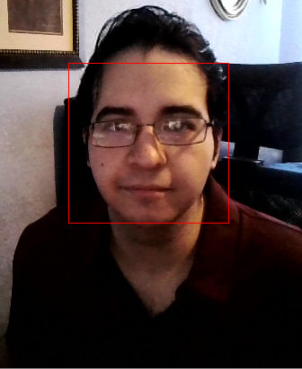

Welcome!
About me:
Hi, I am a Texas A&M Engineering Student that is currently pursuing a B.S. in Computer Engineering. I am very passionate about programming and Computer Science, and I also enjoy creating and designing circuits. My current occupational goal is to pursue a career that applies principles of Computer Science and Electrical Engineering (e.g., Firmware Engineer, Computer Engineer, Software Engineer, etc.).

Work Experience
STEP Intern, Pittsburgh, PA (Remote)
Summer 2020
-
Starter Project - Portfolio
- Developed personal portfolio website, illustrating my education, work experience, and personal projects in a clear and concise webpage. Created website’s frontend using JavaScript, HTML, and CSS.
- Implemented a comments feature on my portfolio, allowing users to leave comments on my webpage. Developed using Java Servlets for the backend and Google Datastore as the project’s database. Note: Comments feature was removed from my portfolio website after my internship ended.
- Added a Geography Map Game on my portfolio website, which allows users to try to guess a country’s location on Google Maps. Implemented using the Google Maps and Geocoding APIs.
-
Capstone Project - BookBook
- Collaborated with coworkers to create and design a web application called BookBook, which allows users to create and manage book clubs, search for books, and store books they wish to read in a booklist
- Led the DevOps of the project, I set up the React frontend and Java Servlets backend integration, and deployment procedures for our project using App Engine Microservices. Enabled the connection of our frontend and backend and their separate deployments.
- Developed the Login and Landing Page, allowing users to login using their Google accounts. Crucial feature allowed us to keep track of user’s clubs and booklists. Implemented using Google OAuth 2.0.
- Implemented the BookList feature of the web app, which allows users to create booklists, search for books, and add them to a booklist. Booklists can also be shared by adding collaborators to them. Developed using Google Firestore as the project database and Bootstrap for styling.
- Enriched the UI of the website by redesigning the Navbar and Sidebar using Material UI and implementing the Home Page. Additionally, I also developed helpful modals to enhance the UI, allowing users to search for either books or users, and add/invite them to clubs or booklists.
Engineering Practicum Intern, Sunnyvale, CA
Summer 2019
-
Internal Project – Developing the Test Identity Provider (Idp)
- Developed the Test Identity Provider’s metadata using OpenSAML 2.0, an open-source library used for exchanging authentication and authorization data between parties.
- Implemented the ability to update the current Idp’s credentials, allowing admins to upload new public and private keys. The feature was developed using OpenSAML and Google’s framework and injector tools.
- Worked on encrypting the SAML response of the Idp using the Service Provider’s public key through OpenSAML encryption tools.
Projects
Face Detection, Summer 2020
The purpose of this personal project was to experiment and learn more about Computer Vision and its applications. The Face Detection program is written in C++ and utilizes OpenCV to detect human faces. The program uses OpenCV’s default face data to train a Cascade Classifier to detect human faces accurately. It then captures the webcam and coverts the input frames to grayscale, to more easily detect faces. Finally, the program draws a red rectangle around the detected face.
Particle Effect, Summer 2019

The Particle Effect program is a personal project I worked on during the summer of 2019. The program was written in C++ and utilized the Simple DirectMedia Layer (SDL 2.0) to create the particle effect. The program first creates a swarm of pixels and moves them in a circular direction. It then adds a box blur to the swarm and changes the color of the pixels to create the unique particle effect. The overall purpose of the project was to learn more about Computer Graphics.